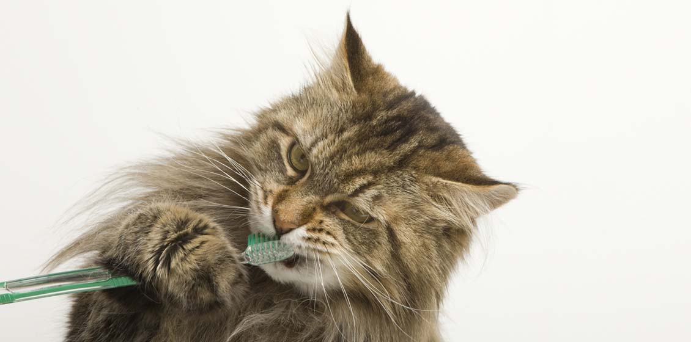

Факт №1. Ваша кошка - хищник.
Несмотря на то, что некоторые люди придерживаются вегетарианской или веганской диеты, кошке подобные диеты противопоказаны. Люди — всеядные, а кошки — натуральные плотоядные. Они не очень хорошо переваривают растительную пищу и им необходим белок таурин, который они могут получить только из мышц и тканей животного происхождения.
Домашние кошки получают необходимые им питательные вещества, питаясь сухими или влажными промышленными кормами, содержащие продукты животного происхождения.
Не переставайте думать не только над тем, чем вы кормите кошку, но и за тем, сколько еды вы ей даете. Контроль веса кошки — самая первая вещь, которую вы можете сделать для увеличения продолжительности кошачьей жизни.
Факт №2. Кошки ненавидят грязные лотки и не любят ими делиться.
Ваша кошка помешана на чистоте. Это означает, что вы должны чистить лоток как минимум раз в день! Оптимальный вариант — каждый день удалять твердые отходы, каждую неделю — полностью очищать и мыть лоток.
Если вы будете содержать лоток в чистоте, это приведет к более частому мочеиспусканию кошки, что может помочь снизить риск развития потенциально смертельных болезней мочевыводящих путей кошек.
Кошки не любят делиться, поэтому если у вас больше одной кошки, потребуется отдельный лоток для каждой их них. Эти лотки должны располагаться в тихом и укромном месте!
Факт №3. Некоторые домашние растения опасны для кошек.
Не знаете, какие растения токсичны для кошек? Посмотрите список растений и симптомы отравления кошек на этом сайте. Если в список попали растения, которые есть у вас дома, то от них лучше избавиться как можно скорее. Если вы думаете, что кошка съела что-то ядовитое, как можно скорее обратитесь в ветеринарную клинику за неотложной помощью.
Факт №4. Зубы кошки нужно чистить и содержать в чистоте.
Это так! У кошек почти столько же зубов, что и у людей, и на этих зубах также появляется налет и зубной камень. Уход за зубами кошек похож на то, как мы заботимся о наших зубах. Вы можете чистить кошке зубы дома (важно использовать специальную зубную пасту и щетку для кошек!), а на ежегодном осмотре у ветеринарного врача проверять их состояние.
Факт №5. Рвота у кошек — это ненормальное состояние.
Обычное заблуждение, что рвота у кошек — это нормально. Единичный приступ рвоты обычно не является поводом для беспокойства. Но если рвота у кошки происходит часто и/или регулярно причина может быть в пищевой аллергии, заражении гельминтами или другими более тяжелыми заболеваниями. Если у вашей кошки частая рвота, хорошая идея не откладывая на потом обратиться в ветеринарную клинику для осмотра.
Факт №6. Кошки — мастера в маскировке боли.
Скорее всего вы не подумаете, что у кошки ухудшилось здоровье, потому что кошки прекрасно скрывают свою боль и другие признаки заболевания. Пожалуйста, обратитесь в ветеринарную клинику при первых признаках отклонения от нормального, обычного состояния кошки.
Ветеринарные врачи способны увидеть болезнь до того, как она примет необратимый характер. Именно поэтому важно проводить диспансеризацию кошки ежегодно.
Факт №7. Кошкам требуется регулярная вакцинация и обработка от паразитов.
Даже если кошка не выходит на улицу, это не является гарантией защиты ее от вирусов, блох и гельминтов. Вирусы и паразитов вы можете принести с улицы на своей одежде и обуви. Риск заражения сильно возрастает, если у вас есть другие животные или кошка выходит на улицу (например, летом на даче).
С каждым годом все реже мы обнаруживаем инфекции и паразитов у собак, тогда как у кошек уровень зараженности остается высоким. Несмотря на то, что собаки регулярно выходят на улицу, их стараются регулярно вакцинировать и обрабатывать от блох и клещей.
С кошками ситуация иная. Стены квартиры не могут надежно защитить их от вирусов, блох и гельминтов, а подобное опасное заблуждение, к сожалению, сильно распространено.